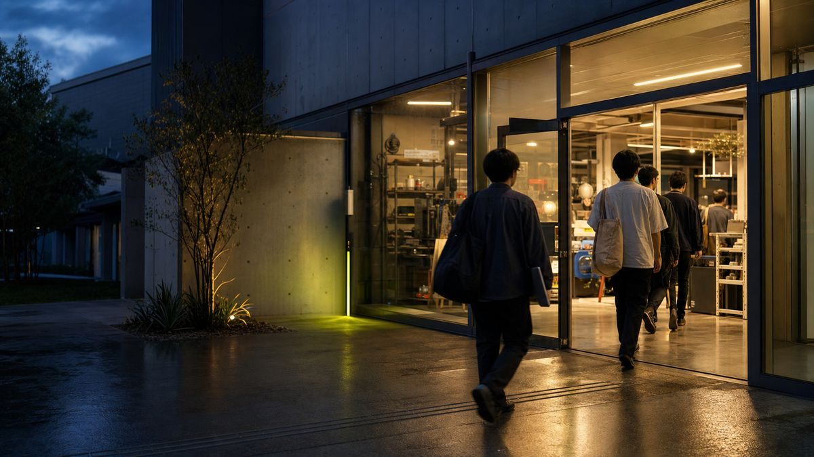

はじまりの回——AIではなく、AXへ。
約15名が参加。まず全員でコーディングAIの基礎を学び、後半の60分は開発体験——その場で一人ひとりが何かを作りました。生まれたのは個人用のLP、業務改善ツール、趣味を支えるアプリ。見事にバラバラで、どれも「変えたい」から始まっています。

AI × Transformation = AX
AIを学ぶ場ではありません。AIで、自分と組織と地域を変えていく人が、月に一度ここに集まる。学びと、実験の場です。
目的は AX——Transformation。ここで学んだことで、自分を、組織を、地域を変えていく。ツールの使い方を覚える勉強会ではなく、変化を起こすための実験室です。
AI
使えること自体には、価値を置きません。速く打てる、きれいに出せる——それはスタート地点。
AX
自分の仕事、組織のやり方、地域の景色。手の届くところから、実際に動かす。そこまでやって、はじめてAX。
エンジニアと、非エンジニアが、同じ机で学び合う。ナレッジは隠さない。持ち寄って、共有する。それがこの場のルールです。
01
非エンジニアの発想と現場の困りごとが、あなたの技術に新しい使い道をくれます。「作れる」を、「変えた」に変える仲間がここにいます。
02
いまは初心者でも大丈夫。必要なのは「何かを変えたい」という思いだけ。AIは、その思いと現場をつなぐ道具として、ここで一緒に覚えます。
教える／教わるの線は、引きません。
エンジニア・非エンジニア関係なく、みんなで学び合う。やってみたこと、つまずいたこと、見つけたこと。ナレッジは全部シェアする。
AIを使えることがゴールではありません。ここで学んだことを、自分・組織・地域の変化に還していく。使うから、変えるへ。
いまは初心者でも大丈夫。必要なのは「変えたい」という思いと、その思いへの初期投資。あとは、手を動かすだけ。
毎回、誰かが何かを作る。その記録を、ここに残していきます。回を重ねるほど、ここがコミュニティの資産になる。
約15名が参加。まず全員でコーディングAIの基礎を学び、後半の60分は開発体験——その場で一人ひとりが何かを作りました。生まれたのは個人用のLP、業務改善ツール、趣味を支えるアプリ。見事にバラバラで、どれも「変えたい」から始まっています。

前回の参加者が、この1ヶ月の成果を発表。自社の課題を解決する業務アプリ、趣味と仕事をつなぐアプリ——「作れた」が「使っている」に変わりはじめました。後半の開発体験ではOCR×ローカルLLMに挑む人も現れ、誰かの挑戦が周りに火をつける、寺子屋のような回になりました。
コーディングAIの基礎から、60分の開発体験まで。初めての方も、コードを書かない方も歓迎です。見学だけでも、どうぞ。
いちばん大事な「変えたい思い」は、当日持ってくれば大丈夫。事前にそろえるのは、この2つです。
check requirements
✓あなたのPCネットにつながるノートPC 1台
✓AIの有料アカウントclaude / chatgpt / gemini （いずれか1つ・推奨は2つ）
# あと1つ、いちばん大事なもの
「変えたい」という思い# これだけは当日持参でOK
見学だけでも歓迎します。参加費は、無料です。
Googleフォームで受付中（所要1分）。見学だけ・質問だけでも歓迎です。